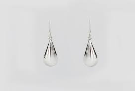

¿Sabías esto...?

1 Signifiacdo de los aretes
Para los antiguos griegos un arete era símbolo de su superioridad, excelencia, valor y rapidez. Para los piratas, un pendiente de oro funcionaba como seguro para pagar su sepultura cuando fallecieran. Según la creencia, la joya se convertía en una recompensa para quienes enterraran el cuerpo.
2Importancia de portar aretes
Los aretes son un accesorio que las mujeres siempre quieren llevar con ellas, pues le dan un toque especial a su estilo. Además, son ideales para combinar con el outfit, transmitir elegancia y hacer juego con el look.
Tipos de aretes más comúnes

-Aretes con perlas
-Arracadas
-Broquel